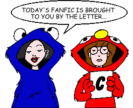
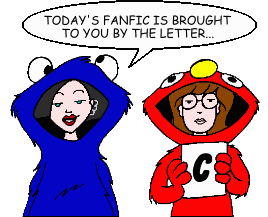

Fan Fiction
"C" by Author

Fan Fiction
"C" by Author

|
Authors: If you no longer wish for any of your stories to be posted, please send e-mail to fanfic@lawndale.net and I will remove them at once. |
| C.E. Forman (ceforman@earthlink.net) |
| The Lost Seasons [Artwork] Category: Series & Multi-Part Stories (Miscellaneous) A series written by one of the veterans of "Daria" fanfic. Set mostly during the show's second and third seasons, this series closely follows the parameters of the show itself, with only minor variations. |
| Caira (caira@graffiti.net) |
| Fade Out Category: Past & Future "I was feeling pretty good this morning. I should have known it couldn't last..." |
| I'm Going to Jane's Category: Miscellaneous Set around the time of "The Misery Chick." Daria goes to Jane's. Of course, there's more to it than that... |
| MTV Mutants #1: Safest Emergency Category: Crossovers & Parodies Lawndale is under threat... and it's not just the graffiti on the "Welcome to Lawndale" sign this time. Brittany's on fire, Kevin's *never* gonna call Mack the wrong thing again, and DeMartino's eye isn't bulging. Obviously, something must be done... and of course Ms. Li screws it up. If there's anything left of Lawndale High afterwards, she might just figure that out. |
| Sculptures Category: Crossovers & Parodies One of the world's few intelligent vampires finally gets a clue and a hitman, and Buffy the Vampire Slayer is dead. And there was much rejoicing. Of course, someone has to replace her, one girl in all the world at any time and all that, and with the way Daria's luck's been running lately... |
| Caitlin Duffy (Infestedmind09@aol.com) |
| And "Zing, Zing, Zing" Went My... Guitar Strings [Artwork] Category: Miscellaneous Quinn is forced to join her school guitar class due to an injury that pulls her out of P.E. Trent gives her lessons to help her catch up. So... why are Jane and Daria getting a little suspicious? A two-part story, with the link for part two at the end of part one. |
| Goodbye Lawndale Category: School Situations The final epic of Daria and Jane and their last days at Lawndale High. (Written before the series finale and "Is It College Yet?") |
| Jane for President Category: School Situations When Jane starts riding the school campaign trail, the Lawndalians get frazzled. Can Daria save the day and pull Jane out of her obsessive route? |
| CalTrec10 (caltrec10@aol.com) |
| Genius or Clay Poisoning?: Q&A with Jane Lane Category: Past & Future Candid interview with a future Jane. |
| Canadibrit (canadibrit@yahoo.com) |
| Battle Royale: Beyond Blunderdome Category: Crossovers & Parodies Based on the film "Battle Royale" by Fukasaku Kinji. A school trip turns nightmarish as the Daria cast is forced to participate in a Government-inspired 'game'. The rules: Kill each other off until only one remains... |
| Behind the Glasses II Category: Miscellaneous A follow-up to John Berry's "Behind the Glasses," featuring more "bloopers and outtakes" from various fan fiction stories. |
| Behind the Glasses III Category: Miscellaneous The third entry in the "Behind the Glasses" series, featuring even more fan fiction "bloopers and outtakes." |
| Harry Potter and the Flack-Jacket Mafia Category: Crossovers & Parodies A TLAS tale with a twist. Set in place of "Tour of Duty," the worlds of magic and muggles may never be the same when Daria, Jane, Lynn, and AP meet up with Harry Potter and his friends at Hogwarts. (Note to those who take this stuff too seriously: don't. Just sit back and enjoy the ride!) |
| I Am (NOT) Daria! Category: Miscellaneous The author has long been teased about being Daria. But what would happen if she woke up one day and actually WAS? |
| The Leader of the Pack Category: Sci-Fi, Fantasy & Horror Trent Lane is a "wild man," or the closest thing to one that Lawndale will ever produce. But one fateful weekend, Daria and Tom find out just how wild Trent Lane can be. |
| The Look-Alike Series [Artwork] Co-written by Ben Yee Category: Series & Multi-Part Stories (Miscellaneous) The adventures of Daria & Company after a new girl moves to Lawndale... one who bears an eerie resemblance to Daria. An epic series that has more twists and turns than a winding mountain road. |
| Candi Gliniecki (candi@silverchairmail.zzn.com) |
| Pop Goes the Weasel Category: Miscellaneous Mystik Spiral gets the opportunity to have a record deal with a "big professional label." Meanwhile, Quinn runs for Fashion Club president. |
| CAP |
| Age Change: Little Sister Category: Alternate History In this AU tale, Daria and Quinn's ages are reversed. Written in response to a PPMB Iron Chef challenge. |
| By the Memorial Category: Alternate History In this AU tale, Helen reminisces about her choice to join the Army (rather than go to college) on a visit to the Vietnam Memorial in Washington, DC. Written in response to a PPMB Iron Chef challenge. |
| Daria in Pink Category: Past & Future Jane tries to get to the bottom of Daria's abrupt decision to leave college when she finds her friend working at the last place she'd expect to find her. Written in response to a PPMB Iron Chef challenge to have one of the characters working as a waitress. |
| Everyone Goes to Nick's Category: Romance Nick plays matchmaker for his friend Trent. |
| Horrors at Bay Category: Alternate History In this AU tale, Jake, a successful author of horror novels, has to reassure his daughter Daria about his career choice (by way of explaining it). Written in response to a PPMB Iron Chef challenge, and a co-winner of the 2007 Bootie for "Best Jake Story." |
| Jacob Morgendorffer, Esq. Category: Series & Multi-Part Stories (Alternate History) In this alternate history series based on a PPMB Iron Chef challenge, the history of Jake Morgendorffer is subtly altered when he decides to become a lawyer instead of a marketing consultant. |
| Jeffy's Choice Category: Past & Future Jeffy contemplates his future in the wake of Kevin's failure to graduate, but he doesn't exactly have a receptive audience in his friends Joey and Jamie. A post-IICY tale written in response to a PPMB Iron Chef challenge to flesh out the Three J's. |
| Manifest Destiny Category: Alternate History An AU tale in response to an Iron Chef challenge by Minx which asked: "What would Lawndale be like if a major event in history did not take place?" Daria, a girl from the German Empire, begins classes at Lawndale High eighty years after the United States chose not to enter World War I. |
| The Road Home Category: Past & Future A response to a PPMB Iron Chef challenge. A story about Helen and Jake, two wandering hippies, meeting on a California beach in 1969. |
| Carol Marino (butterfly_chick_98@yahoo.com) |
| Like Jello Category: Romance Daria and Jane go to Mystik Spiral's gig at the Pizza King, where Trent writes a song that reveals his feelings for Daria in a strange way. |
| Carrie D. Wildly |
| Abruptly Amy in "A.A. A.O.K." Category: Crossovers & Parodies Amy fights to retain custody of Andrea after her biological mother pays a visit to Rutherford. But her sister Rita just might provide the death blow. Special guest voices: Wendy Hoopes as Helen Barksdale Morgendorffer and Roma Downey as Matilda Hecuba. |
| Cassie Murphy (enola_r@hotmail.com) |
| Any Time At All Category: Romance Take Andrea, over-reactive parents and a jock with a grudge, add a keg party and what have you got? Daria calling Trent...?! |
| From Little Things... Category: Miscellaneous Can a fashion queen grow a conscience? Can a too-cute puppy overcome his physical defects? Can a Fashion Club enterprise succeed? Next on Sick, Sad... er, this story! |
| Just Another Beautiful Story Category: Romance Andrea returns, the Seven Dwarfs get addicted, and Hansel and Gretel have Witch Flambe, all in the last fic of the author's kinda-trilogy. |
| The Kids Aren't Alright Category: School Situations Telephone taping, Ms. Li's unfinished homework, aliens, and Luigi... all add up to a reoccurrence of everybody's favorite rash! |
| CAT3508 |
| The Green Eyed Daria Category: Romance Daria becomes jealous of the new girl in school. |
| Catie Powell |
| The Lock-In Category: School Situations Lawndale High has a voluntary (yeah, right) all night lock-in for all students. When they ask for chaperones, guess who gets roped in? |
| CDM (cdm2012@ntin.net) |
| Daria: The Mona Lisa Smile of Fate Category: Crossovers & Parodies Daria tells Jane and the Gupty kids about her childhood encounter with a very stupid cult. A crossover with the film "Manos: The Hands of Fate". |
| Cedric Robert (robert_cedric@hotmail.com) |
| Paper Cuts Category: School Situations Daria accepts a position on the school newspaper, at Jodie's request, and uncovers a conspiracy involving possibly Mack and the football team. |
| CF |
| Suite Seventeen Category: Miscellaneous Daria's padded cell-like bedroom is featured in teenage fashion magazine Seventeen. Inspired by the actual article from the July 1998 issue. |
| cfardell_Brenorenz29 (fardell24@hotmail.com) |
| Lawndale and Sandi Griffin's Genie Category: Series & Multi-Part Stories (Sci-Fi, Fantasy & Horror) When Sandi Griffin discovers a genie, she unwittingly sets in motion a chain of events that will change Lawndale as she knows it. |
| Quinn's Code Category: Series & Multi-Part Stories (Alternate History) Quinn Morgendorffer is interested in computers and anime rather than fashion. This leads to changes when the Morgendorffer sisters start at Lawndale High. But what is up with Daria? |
| Charles RB |
| God Save the Esteem Category: Series & Multi-Part Stories (Alternate History) October 2010, and the hardcore punk Morgendorffers are descending on Lawndale: Hellion, Jake the Snake, Killer Quinn, and... Daria, the one who refuses to rebel properly. Can an armor of sarcasm get Daria through headbutt-filled family life and Lawndale High School? Heck no! |
| CharlieGirl |
| Five Category: Past & Future Helen overhears a conversation between Daria and Quinn, and concludes that every parent's nightmare has come true: one of her daughters is pregnant! |
| Illusions: The Unswerving Punctuality of-- Category: Sci-Fi, Fantasy & Horror Daria, one of a certain special breed of writer, investigates her attic and keeps an appointment made behind her back by chance and fate. |
| Chick309@aol.com (Chick309@aol.com) |
| The New Chick Category: School Situations A new girl arrives at Lawndale High. |
| Chris Fabris (Chrisfab@netzero.net) |
| The 2 Sides of a Cynic Category: Crossovers & Parodies Daria and Jane are heroes with James Bond-like gadgets, fighting the fiendish Mumm-ra and his plans to rule the world, in this crossover with "Thundercats." |
| Chris Mack (saberhaagen@yahoo.com) |
| Live the Life of Quinn Category: Crossovers & Parodies Quinn and Daria have a "Freaky Friday" experience when their bodies are switched, and each gets a glimpse into the other's life. |
| Chris Orban (lborban@pol.net) |
| Snowed Out Category: Miscellaneous Daria goes to Aspen with her family and Jane goes to the beach with Trent. |
| Chris Smith (cws@wvinter.net) |
| Misery Chick: Wrestling with Fashion Category: Crossovers & Parodies When Sandi disgraces her old hometown, chaos follows. This story (which takes place five years after the episode "Esteemsters") is strongly based on the documentary about wrestler Bret Hart. |
| Christa (Angrytaco346@aol.com) |
| Sarcasm Queen Category: Romance Things happen between Daria and Trent (once again) after a little prodding from Jane (once again) and a few accidental findings. |
| Christopher McElligott |
| Trial by Ordeal Category: Miscellaneous What do you get when you combine Daria, Jane, Trent, Jesse, an old friend of Trent's, an international child slavery ring, and the Midwest's most powerful moonshine car? This story, which is set at the end of Daria's junior year in high school. |
| Chrystin Angel |
| Put Your Best Chain Forward Category: Romance Jane and Tom realize that Trent and Daria like each other, so they chain them together for a total of one week and four days. |
| Chuckie Finster |
| Pinchsitter II Category: Crossovers & Parodies A reworking of the episode "Pinch Sitter," only instead of the Guptys, Daria is babysitting the kids from "Rugrats." |
| Uh-Huh-Huh-Huh-Huh, Football-Head Category: Crossovers & Parodies Daria and Jane become study buddies with the Powerpuff Girls, Arnold, Helga and Gerald, until something bad happens and Daria has to return to the past that she thought she had forgotten for good. |
| coonassblondie (coonassblondie@yahoo.com) |
| Mona Lisa Smile Category: Miscellaneous Trent has an unexpected house guest. A story of how he reacts and what happens. A fair amount of angst, with a touch of romance. |
| Corvus Marinus (corvus-marinus@home.com) |
| Reconstructing Sandi Category: Series & Multi-Part Stories (Miscellaneous) What happens when you suddenly realize that you are achieving nothing in life and have no real friends? You might do what Sandi Griffin has decided to do: rebuild your life from the ground up, with help from a certain artistically-inclined social outsider. |
| Courtney Wells (SentryHope@aol.com) |
| Hostile Makeover Category: Miscellaneous Quinn and the other Fashion Club elite must come up with an idea in order to save their beloved organization from reduced funding. They decide that in order to do this, they must transform someone from "geek to chic." And that's where Daria comes in... |
| Seventeen Candles Category: Miscellaneous Daria is turning 17 and Helen tries to plan a surprise party to show how much she cares. Naturally, that's about when everything goes straight to hell... |
| CrazyInsaneAnimeFanGirl (mclauren26@go.com) |
| Sailor Switch Category: Crossovers & Parodies A bizarre dimension hole causes some of the Daria characters and some of the Sailor Moon characters to switch places! |
| Cruel Summer Nights |
| Boxing Daria: Alternate Ending Category: Alternate History What if Daria wasn't so lucky in "Boxing Daria"? |
| Crusading_Saint (canonisation@hotmail.com) |
| Assistant Living Category: Miscellaneous Helen's assistant Marianne finds herself having a very interesting evening with a mysterious stranger... |
| Attraction Anxiety Category: Miscellaneous Sandi Griffin finds herself in one of the most irritating situations she's ever been in: she's in love. |
| Fixing a Hole Category: Miscellaneous One day in the mall, two women meet up and discover they have a lot more in common than they thought. |
| Four Play Category: Romance Four people, two sets of relationships. What happens when everything comes to a head? |
| Ghosts of Christmas Future Category: Past & Future Fifteen years in the future, the lives of some former residents of Lawndale come together at Christmastime. |
| Griffin's Flight Category: Past & Future After "Is It College Yet?", Sandi Griffin tries to put her life back together. Some people don't want things to go back to how they were, however... |
| A Loss of Perspective Category: Past & Future The members of the Morgendorffer household ponder what life is like now that Daria is gone. |
| Love, Reign Over Me Category: Romance Living in Washington DC, Quinn's friend Lindy searches for love and happiness. One day, she meets an interesting woman named Alison... Note: This story includes content (language, violence, or sexual situations) that may not be appropriate for some readers. |
| Present Moment Category: Miscellaneous All Mack wants is to get a birthday present for Jodie. Why does life not seem to want to help him? |
| Shadows and Secrets Category: Sci-Fi, Fantasy & Horror What lengths would you go to for your friends and family? How far would you go? Jane is about to find out. |
| Teenage Wasteland Category: Romance Daria and Jane are still working out the intricacies of their relationship. Throw Kevin into the mix, and things are bound to get a little weird. A sequel to "Four Play." |
| Temporal Friends Category: Sci-Fi, Fantasy & Horror What would you do if you lost the most important person in your life? What would you do to get that person back? |
| Trophy Chasers Category: School Situations When a Lawndale High trophy is stolen, Mack and Kevin are told to go retrieve it. But can they do it without killing each other first? |
| Wry Hard Category: School Situations One lazy Saturday afternoon, strange events begin to plague Lawndale High, including... a return from the dead? |
| You Only Hurt the Ones You Love Category: Sci-Fi, Fantasy & Horror In this two-part story, Lawndale's residents are hoping for some changes in their lives. They should've remembered the old adage about being careful what you wish for, because it looks like they're going to get more changes than they ever bargained for... |
| Cyke (cykes_revenge@yahoo.com) |
| New Masters of the Universe Category: Series & Multi-Part Stories (Crossovers & Parodies) In this crossover series, the never-ending battle between He-Man and Skeletor comes to Lawndale, home of He-Man's descendent. |
| Power Rangers: Lawndale Force Category: Series & Multi-Part Stories (Crossovers & Parodies) In this crossover series, five teenagers from Lawndale have been chosen as the heirs to incredible powers. Their task: nothing less than the protection of the entire planet. |